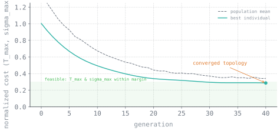

The problem
The WEST tokamak uses reciprocating probes that plunge into the scrape-off layer — the outer plasma region where field lines terminate on material surfaces. The probe experiences extreme heat flux combined with transient electromagnetic loading.
The probe body is GRCop. If the internal water-cooling channels cannot extract heat at a sufficient rate, the component risks melting or thermal stress failure.
Determine the maximum insertion depth and dwell time before failure. Target was long-pulse operation — up to 1000 seconds.
Why it was hard
Three separate physics problems, three separate solvers, and none of them natively hands data to the next one.
- Plasma heat flux depends on probe geometry and insertion depth.
- Conjugate heat transfer depends on that heat flux and the internal channel geometry.
- Thermal stress depends on the resulting temperature field and the transient EM loads.
Changing a single geometry parameter requires re-running all three solvers. Manual iteration limits throughput to a handful of designs and provides no guarantee of convergence toward an optimum.
The approach
I built a fully automated conjugate simulation loop and then wrapped an optimizer around the whole thing.
- HEAT — ORNL's open-source Heat flux Engineering Analysis Toolkit — computed the incoming plasma heat flux onto the probe surface for a given geometry and SOL flux profile.
- A Python / pyAnsys script mapped that heat flux field onto the 3D model as a boundary condition in ANSYS Fluent. pyAnsys provided programmatic access to the solver, enabling full automation of the workflow.
- ANSYS Fluent solved coolant flow, dynamic pressure drop, and the conjugate temperature field through the solid body.
- ANSYS Mechanical imported the thermal field and computed thermal expansion stress combined with transient electromagnetic loading.
- PyGAD orchestrated the full loop. The genetic algorithm parameterized cooling channel geometry, launched the solver chain, evaluated peak temperature and peak stress, scored each design, and selected for subsequent generations.
The fitness function balanced competing objectives: pressure drop, heat removal, and structural margin. Designs that optimized cooling at the expense of feasible pump requirements were penalized.

Technical stack
Engineering challenges
Solver handoff fidelity
Mapping a heat flux field from HEAT onto a Fluent mesh requires preserving the peak flux magnitude. Spatial averaging during interpolation attenuates the peak and produces non-conservative downstream predictions.
Runtime budget
Genetic algorithms require large numbers of evaluations. Computational cost per evaluation compounds across population size and generation count, making solver efficiency critical.
Failed simulations
The GA generates arbitrary geometry parameterizations, some of which fail to mesh. The loop required robust error handling to detect failures, assign penalty scores, and continue execution without stalling.
Multi-objective trade-offs
Multiple competing objectives with design-point dependence — the optimal solution varies with the SOL flux profile used as the design condition.
Results
- The loop ran tens of parameter sweeps with no manual intervention.
- Produced an optimized internal cooling channel topology for the probe.
- Established a quantitative Figure of Merit mapping insertion depth against SOL flux profile.
- Validated structural integrity of the probe and plasma-facing components under high heat flux and transient EM loads via coupled CFD/FEA.
The FoM provides a quantitative basis for insertion planning — mapping permissible probe depth against SOL flux conditions — replacing what was previously an experience-based judgment.
What I learned
The automated workflow had more lasting value than any individual optimized design. A single geometry answers one design question; the loop enables systematic exploration of the full parameter space for future studies.
Genetic algorithms will exploit any unconstrained degree of freedom in the fitness function. Without manufacturing constraints, the optimizer converges on geometries with strong scores that cannot be fabricated.
Include manufacturability constraints — minimum wall thickness, drill-path feasibility — in the fitness function from generation zero, rather than adding them after initial results reveal infeasible geometries.